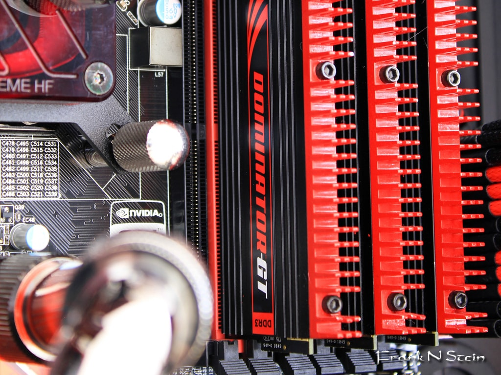

Project 2
Upgrading Your PC
Upgrading your desktop

Desktop PCs are cheap but solid machines that can easily be upgraded. Most upgrades focus on components found on your motherboard. These quick tips will give your old, depressing desktop new life.
Add or replace RAM
Adding RAM is one of the easiest and cheapest ways to speed up your sluggish computer. More RAM allows your computer to do more tasks at once, reducing the amount of time it takes to load.
If your computer has recently developed problems with connecting to anything, running out of space, or being very noisy, adding new RAM should suffice. If you spend more time fixing your computer rather than using it, it is time to replace your DIMMs entirely. An 8GB upgrade can cost you as ittle as $50.
Before buying RAM, make sure to check your motherboard's requirements in your manual. You must match the standard (DDR3, DDR4), speed (megahertz), and number of DIMMs (usually between two and eight).
When adding the new RAM to your computer, check your DIMM slots. In many cases you will have open slots where it is possible directly insert the new RAM. Otherwise, you can replace old DIMMs with new ones.
Replace your mechanical drive with an SSD

Replacing your old mechanical hard drive with a solid state drive is another easy method for improving your computer. Modern flash storages are much faster than old hard drives. While it is slightly more expensive, prcies are dropping and there are many benefits, including faster boot-ups and general responses.
Changing the storage drive is slightly more complicated than replacing RAM. You will need to connect the SATA power to the power supply and data cables to the motherboard, then transer your operating drive to a new drive or install a new one. It's a good idea to back up your files to an external drive before the installation process.
Get a new graphics card
All gamers know that having good graphics and running at a high frame rate is necessary for an enjoyable experience. Unfortunately, newer more complex games end up running at lower frame rates on your original graphic card. When this starts to become unbearable, it is time for an upgrade. To upgrade your computer, you can either implement multiple GPUs or swap out the old GPU for a brand new one.
Using multiple GPUs
Having multiple GPUs is a cheaper method for upgrading and getting a high-end computer. It usually boosts gaming performance by 60-70%. However, this only works with modern GPUs. For the setup, you will need to properly match second card with your current one. They must have the same GPU inside with the same amount of memory to be in full compatibility but do not need to be from the same manufacturer.
Limitations
Some GPUs are deliberately made to prevent people from doubling up, and not all motherboards are capable for supporting multiple graphics card. Even if they have spare PCIe slots, they do not always have the license to support Nvidia's SLI tech. AMD, though, has graphic slots that are CrossFire compatible.
Before installation, you will also need to make sure the graphic card is supported by your CPU. This means that a =nother 100-300 watts of power headroom and power cables may need to be added. In the case that you need to upgrade to a new PSU, the cost may make the addition no longer worth it.

Many times, a duplicate is hard to find, possibly giving it a high price. Other times, certain GPUs are incompatible with games being played. Upgrading to a new GPU would be the cheaper option here.
A new GPU
Luckily, there are few problems when switching to a new GPU. Motherboards from 2011 or later usually have a PCI Express 3.0 slot, which modern graphics card are based on. PCIe 2.0 connections work as well.
With the modern GPU efficiency, a new power supply is not needed. A 500-600 watt PSU is sufficient more almost all graphics cards. Ideally you should have, a pair of 6-pin or 8-pin PCIe power connectors, but they are not always all used.
Finally, consider the physical side of the new card. Most cards have either a dual-slot or triple-slot width. The length is the real issue. AMD cards are generally longer than Nvidia, so make sure to compare the new card's dimensions to your current GPU.
New CPU and/or motherboard
The motherboard and CPU are linked with each other and interconnected with all other parts. If one has a problem, chances are the other needs replacing as well. For most gamers, a new graphics card solves the probem of low frame rates and resolution. However, more intensive games can put greater demands on your processor. To check your CPU, it is a good idea to test the effect of your favorite and most demanding games on your computer.

Identifying the problem
To throughly check your GPU and CPU usage, download the application HWMonitor. Leave the app up and running while playing a demanding game. If either your GPU or CPU are running at above 90%, then you have identified the problem. Ideally, you would want both to be running at a similar load.
With the game continuing to run, you can bring up Task Manager to check the CPU performance in the "Performance" tab. This will allow you to see which core or thread is running behind. If all threads are running at their limits, you may need a faster, more heavily threaded processor.
Identifying your next move will depend on your motherboard.
Identifying your motherboard socket
CPUs are only compatible with certain motherboards, making replacement a tricky process. The key is to look for your processor's CPU socket. Be extra careful to note exactly which CPU can be used, as many CPUs have similar names but are completely different. Just because a processor physically fits the socket does not mean the functions will match.
A handy application that may help is CPU-Z. The free download gives you a full analysis of your machine's main components. After downloading, run the app to see details about your processor. The first tab deterimes the exact designation and other socket copatibility details about your CPU. The main tab shows information about your motherboard, such as the chipset and its BIOS version.

Once you have identified the mother board socket, you need find a new CPU chip to buy. Download the application Newegg in order to find a compatible CPU. In the app, find your current chip and look for a new but compatible chip with a major boost in frequency or thread count. In the case that you are already running the top CPU for your board, the only way to further upgrade your computer is to get a new socket, which means a new motherboard.
Implementing a new motherboard
Replacing your motherboard requires you to remove everything from your rig. It is essentially almost an entirely new build, so backing up your files and starting with a fresh Windows installation is a good idea.
The process can also be very expensive, since a new motherboard and CPU can require new memory parts to fit to the new board. Recently, DDR4 memory tech has been starting to replace the current DDR3 tech; however, the progression of DDR4 is slow, so you have a higher chance of needing to switch from DDR2 to DDR3 memory.
Some of the best places to shop for motherboards, CPUs, and other computer components:
- Newegg.com
- NCIX.com
- Tiger Direct
- Best Buy (very limited for components, good for accessories)
- Micro Center
- Fry's Electronics
A new case
If you are shifting to a brand new motherboard platform, it may be easier to pick a whole new system. Remember, with your old system, many parts can be transferred over to decrease the cost. In places such as Newegg (in the US) and Scan (in the UK), you can buy upgrade kits that include a motherboard, CPU, cooler, and memory. These kits are tested together and fully compatible, coming with a warranty.
Upgrading cooling

Good cooling allows your computer to run at lower temperatures, which means less stress on your CPU and motherboard, leading to a more stable and longer lasting system. The lower temperature reduces fan speed and noise while creating more clockspeed options. Many Intel CPUs are mostly locked down on clockspeed, but with one of AMD's unlock CPU models, a modest cooler upgrade will significantly crank up the clocks.
All-in-one liquid coolers combine the core components of any liquid cooling system, including the waterblock, pump, reservoir, tubing, radiator, and fans. Available in a variety of sizes, these are easy to install as regular heatsinks as long as you case has the space. Maintenance is extremely convenient as it does not require refilling.
A great number of air coolers are designed with a massive array of copper cooling fans. These have the benefit of almost no noise or dust build up. However, passive cooling is not suitable for high performance computers, as they are not strong enough to control the temperature.
Upgrading your laptop

There is less to consider when upgrading your laptop compared to a desktop, but installation is more difficult. Many modern models require disassembly for upgrades, which has the risk of serious damage. Fortunately, older models, especially large business-oriented machines, still allows user access to some core components.

RAM
Most laptops have a panel underneath that exposes the DIMM slots when removed. Unscrew the holding screws to remove the panel.
Some laptops require the reomval of the keyboard. Remove the hinge cover by prying up the plastic. Take out the two screws beneath the hinge cover, lift it off, and unplug the connector to detach the keyboard.
To remove the original RAM, take off the metal clips from each end. It should cause the RAM to pop up at an angle. Gently pull the RAM out and insert the new RAM at the same angle until it is completely sealed. Press down, then reattach the holding clips and panel. You can now boot your computer up, and it should automatically recognize the change in RAM.
The hard drive
http://www.pcworld.com/article/148945/upgrades.html?page=2